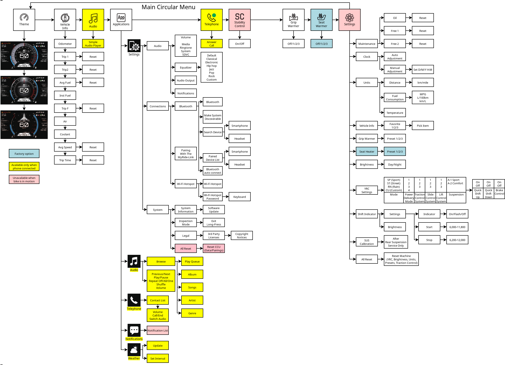

Home
Tracer 9 GT+ menu diagram
I drew
the joystick menu in Dia
, and I learned a lot.
The owner's manual should have this, except my bike differs slightly from the text description, so I assume a diagram would be similarly outdated.
